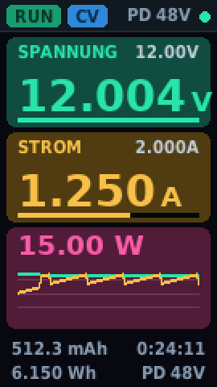
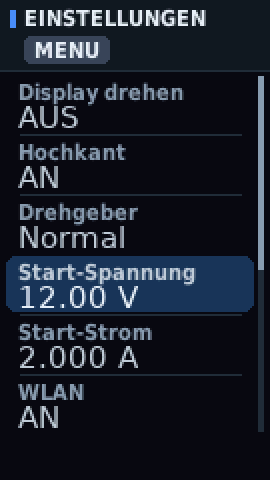

PD48V
Ein Labornetzteil, das seinen Strom aus einem USB-C-Ladegerät bekommt.
Bald auf Kickstarter. Die Kampagne ist in Vorbereitung.

Ein Kabel statt Netzteil.
Ladegerät mit USB-C anstecken, Spannung und Strom am Drehknopf einstellen, fertig. Mit einem Ladegerät nach USB PD 3.1 liefert das PD48V bis zu 240 Watt, ohne Trafo und ohne Lüfter.


Klein, aber für 10 A gebaut.
Eine GaN-Halbbrücke schaltet mit 250 kHz, eine große Speicherdrossel glättet. Die Regelung misst Spannung und Strom 20 000-mal pro Sekunde nach. Wärme geht über die Bodenplatte aus Aluminium.
Was es kann.
- Spannung und StromVon 0 bis 47 V, mit einstellbarer Strombegrenzung.
- Passt sich dem Ladegerät anWählt selbst das passende Profil, von 5 bis 48 V.
- Schützt sich und die SchaltungSchaltet bei Kurzschluss und Überspannung sofort ab.
- Im Browser bedienenMesswerte live, mit Aufzeichnung, über WLAN oder einen USB-Stick.
- Messen und testenKennlinien, Dioden, Kondensatoren, Akkus laden.
- Ladegeräte prüfenZeigt, was ein USB-C-Ladegerät wirklich liefert.
Am Gerät und am Computer.
Alle Werte auf dem Display am Gerät. Wer mehr will, öffnet die Oberfläche im Browser.



Technische Daten.
| Eingang | USB-C, USB PD 3.1 bis 48 V / 5 A (fest, EPR, PPS, AVS) |
|---|---|
| Leistung | 240 W im Dauerbetrieb |
| Ausgang | 0 bis 47 V, Strombegrenzung einstellbar, ausgelegt für 10 A |
| Wandler | Synchroner Abwärtswandler, GaN-Halbbrücke LMG5200, 250 kHz |
| Regelung | ESP32-S3, 20 kHz |
| Messung | INA228, 20 bit, Shunt 10 mΩ |
| Bedienung | Farbdisplay oder OLED, Drehknopf, zwei Tasten, Browser über WLAN |
| Anschlüsse | 4-mm-Buchsen |
Bald auf Kickstarter.
Die erste Version läuft und ist im Einsatz. Bis zur Kampagne wird die Hardware für die Serie überarbeitet. Termin und Preis stehen noch nicht fest.
Firmware aktualisieren.
Gerät per USB-C an den Computer anschließen, das passende Modell wählen und den Anschluss bestätigen. Einstellungen bleiben erhalten. Funktioniert in Chrome und Edge am Computer.
- Ausgang vorher ausschalten.
- Unsicher, welches Modell? Erst „mit PSRAM“ installieren. Startet das Gerät danach immer wieder neu, „ohne PSRAM“ nehmen.
- Wird das Gerät nicht gefunden: BOOT gedrückt halten, kurz RESET drücken, BOOT loslassen.